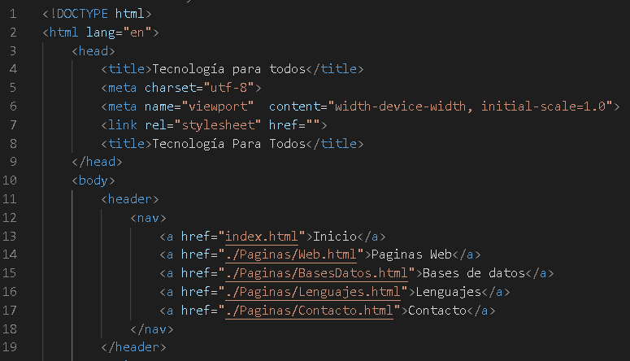

PAGINAS WEB

¿Qué es una pagina web?
Las pagina web son documentos electronicos que almacenan información en la nube(internet), cualquier persona que tenga acceso a
internet puede ver la información almacenada siempre que tengan el permiso de acceso.
Tipo de paginas web
Web estatica
Web dinamica
Paginas informativas con contenido fijo, no suelen actulizarse constantemente, mantienen un flujo de información bajo y constantemente.
Paginas con contenido actualizado constantemente, flujo de información alto. Los usuarios suelen interactuar con este tipo de paginas, como tiendas virtuales o foros.
HTML, CSS y JavaScript
HTML o Hyper Text Markup Language, es un lenguaje de marcas/etiquetas, funciona mediante el enmarcado de la información con el uso de etiquetas:
CSS o Cascade Style Sheets, es una hoja de estilos que le da color y estetica
a las paginas web, sirve para modificar la posicion de una
imagen, el tamaño de la letra, el tipo de letra y demas.
Sin hoja de estilos:

Con hoja de estilos:

JavaScript sirve para que el usuario pueda interactuar con la pagina web
¿Qué es HTM, CSS y JavaScript?
Video recuperado de https://www.youtube.com/watch?v=fP91IvXm0vg&ab_channel=FrijeyTV
Consejos
- Use un editor de codigo, ese facilitara el proceso de la creacion de una pagina web.
- Al crear una pagina web mantenga un orden coherente en el codigo,esto facilitara su lectura.
- Use las etiquetas acorde con el uso de la misma, esto hara que tenga un codigo limpio.